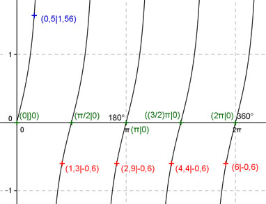

Aufgabe 139 Ergänzen Sie die Wertetabelle für x zwischen 0 und 2π: y = tan 2x x 0,5 1,3 oder 2,9 oder 4,4 oder 6 y 1,56 -0,6 Periode = π/2 Berechnung der Nullstellen: tan 2x = 0 ---> Substitution 2x = u --> tan u = 0 --> u = k * π mit k = 0, 1, 2, ... --> Rücksubstitution liefert 2x = k * π |:2 --> x = k * π/2 x1 = 0 oder 0°, x2 = π/2 oder 90°, x3 = π oder 180°, x4 = (3/2)π oder 270° oder x5 = 2π oder 360°.  Funktionswert an einer Stelle x ermitteln: 0,5 * 180° x = 0,5 oder ------------ = 28,65° π f(0,5) = tan (2 * 0,5) = tan (2 * 28,65°) = 1,56 gerundet. Berechnung der x-Werte für y = f(x) = -0,6: f(x) = -0,6 eingesetzt, existiert einmal zwischen 0 und π/2 bzw. 0° und 90°, zwischen π/2 und π bzw. 90° und 180°, zwischen π und (3/2)π bzw. 180° und 270° und zwischen (3/2)π und 2π bzw. 270° und 360° (siehe Graph). tan 2x = -0,6 ---> 2x = arc tan -0,6 = -0,54 |:2 x = -0,27 liegt nicht im Bereich zwischen 0 und 2π --> 1,3 * 180° x1 = (π/2 - 0,27) = 1,3 oder ----------- = 74,5° π x2 = (π - 0,27) = 2,87 oder 164,4° x3 = ((3/2)π - 0,27) = 4,44 oder 254,5° oder x4 = (2π - 0,27) = 6,01 oder 344,9°.